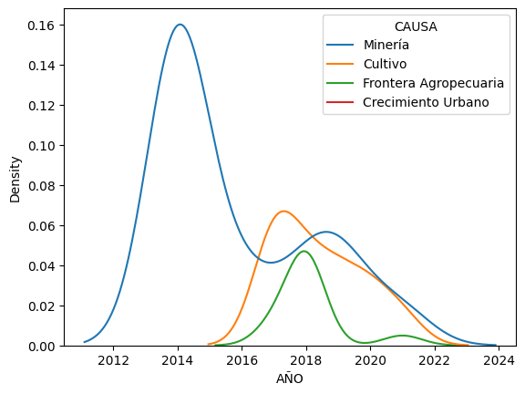

Analisis
-
Descripción del análisis - Causas y frecuencia:
A modo de inicio, se lleva a cabo una gráfica de cada una de las causas (expresadas en el DataSet) para la deforestación de las distintas áreas del Chocó con relación a su frecuencia. De esta manera, es posible determinar que los factores con mayor probabilidad de presencia en los distintos municipios son: el cultivo, con 5000 registros; la minería, con casi 2000 registros; la frontera agropecuaria y la ganadería, ambos con menos de 500 registros.
Descripción del análisis - Municipios y áreas deforestadas:
A través de la siguiente gráfica es posible relacionar cada uno de los municipios que componen al Chocó con las áreas que han sido degradadas debido a los múltiples factores ya expuestos.
Acandí
Dentro de las causas de deforestación que poseen un mayor alcance en el municipio de Acandí se encuentra el cultivo y la ganadería, siendo cultivo el factor más relevante. Referente al comportamiento de la gráfica, es posible observar que hubo un crecimiento exponencial de estos dos eventos entre 2018 y 2019, sin embargo, ambas decrecen drásticamente a partir del año 2019.
Atrato
Dentro de las causas de deforestación que poseen un mayor alcance en el municipio de Atrato se encuentra la minería, el cultivo y la frontera agropecuaria, siendo la minería el factor más relevante. Referente al comportamiento de la gráfica, es posible observar que con el pasar de los años hay un decrecimiento significativo de todos los 3 factores, siendo casi nulas en la actualidad.
Bagadó
Dentro de las causas de deforestación que poseen un mayor alcance en el municipio de Bagadó se encuentra el cultivo y la minería. Referente al comportamiento de la gráfica, es posible observar que con el pasar de los años la minería ha mantenido un índice bajo, pero aun así constante, a diferencia del cultivo que tuvo un crecimiento acelerado para 2018 y 2019 y rápidamente decreció.
Bahía Solano
Dentro de las causas de deforestación que poseen un mayor alcance en el municipio de Bahía Solano se encuentra el cultivo como factor principal. Referente al comportamiento de la gráfica, es posible observar que con el pasar de los años el cultivo ha estado presente, teniendo un mayor protagonismo para el año 2014 y 2020.
Bojayá
Dentro de las causas de deforestación que poseen un mayor alcance en el municipio de Bojayá se encuentra el cultivo como factor principal. Referente al comportamiento de la gráfica, es posible observar que con el pasar de los años el cultivo ha estado presente, principalmente a partir del año 2018, es decir, cuenta con un impacto reciente.
Carmen del Darien
Dentro de las causas de deforestación que poseen un mayor alcance en el municipio de Carmen del Darien se encuentra el cultivo, la frontera agropecuaria y la ganadería. Referente al comportamiento de la gráfica es visible que cada causa tuvo un alcance diferente: el cultivo estuvo presente mayormente para 2020, la ganadería mantuvo un índice menor, principalmente en los últimos años, y la frontera agropecuaria tuvo un crecimiento momentáneo en 2018 que disminuyó después de un año.
Cértegui
Dentro de las causas de deforestación que poseen un mayor alcance en el municipio de Cértegui se encuentra la minería y el cultivo, y se hace evidente el alto alcance que obtuvo la minería. Referente al comportamiento de la gráfica, se puede observar que a partir del año 2012 la minería tuvo un crecimiento exponencial, manteniéndose así hasta 2020; por otra parte, el cultivo alcanzó su mayor pico en 2021.
Condoto
Dentro de las causas de deforestación que poseen un mayor alcance en el municipio de Condoto se encuentra la minería. Referente al comportamiento de la gráfica, se puede observar que a partir del año 2012 la minería tuvo un crecimiento exponencial que disminuyó con el tiempo, y volvió a presentarse nuevamente en 2018.
El Canton del San Pablo
Dentro de las causas de deforestación que poseen un mayor alcance en el municipio de El Canton del San Pablo se encuentra la minería. Referente al comportamiento de la gráfica, se puede observar que a partir del año 2012 la minería tuvo un crecimiento exponencial que disminuyó con el tiempo, y volvió a presentarse nuevamente en 2018.
El Litoral del San Juan
Dentro de las causas de deforestación que poseen un mayor alcance en el municipio de El Litoral del San Juan se encuentra el cultivo. Referente al comportamiento de la gráfica, se puede observar que tiene un crecimiento exponencial a partir del año 2018 que disminuye con el pasar de un año.
Istmina
Dentro de las causas de deforestación que poseen un mayor alcance en el municipio de Istmina se encuentra la minería y el cultivo. Referente al comportamiento de la gráfica, se puede observar que siguen un patrón de crecimiento y disminución: la minería presenta un alto índice para los años 2014 y 2020; en el caso del cultivo presenta un alto índice para el año 2020.
Juradó
Dentro de las causas de deforestación que poseen un mayor alcance en el municipio de Juradó se encuentra el cultivo. Referente al comportamiento de la gráfica, es posible observar que con el pasar de los años ha estado presente en repetidas ocasiones, teniendo un mayor protagonismo para el año 2015 y 2020.
Lloró
Dentro de las causas de deforestación que poseen un mayor alcance en el municipio de Lloró se encuentra la minería y el cultivo. Referente al comportamiento de la gráfica, es posible observar que con el pasar de los años el cultivo ha mantenido un índice bajo, pero aun así constante, a diferencia de la minería que tuvo un crecimiento acelerado para 2019 y rápidamente decreció.
Medio Atrato
Dentro de las causas de deforestación que poseen un mayor alcance en el municipio de Medio Atrato se encuentra la minería, el cultivo y la frontera agropecuaria. Referente al comportamiento de la gráfica es visible que cada causa tuvo un alcance diferente: la minería estuvo presente mayormente entre 2013 y 2015, el cultivo tuvo un crecimiento progresivo que disminuyó para 2020 y la frontera agropecuaria mantuvo un índice menor, con un mínimo aumento en 2016.

Nóvita
Dentro de las causas de deforestación que poseen un mayor alcance en el municipio de Nóvita se encuentra la minería y el cultivo, ambas con tendencias muy diferentes. Referente al comportamiento de la gráfica, la minería estuvo presente mayormente en 2014 y 2019, disminuyendo después de este tiempo; mientras que el cultivo aumenta en gran medida a partir de 2018 para decrecer rápidamente tras 3 años.
Nuqui
Dentro de las causas de deforestación que poseen un mayor alcance en el municipio de Lloró se encuentra la minería y el cultivo. Referente al comportamiento de la gráfica, es posible observar que con el pasar de los años el cultivo ha mantenido un índice bajo, pero aun así constante, a diferencia de la minería que tuvo un crecimiento acelerado para 2019 y rápidamente decreció.
Quibdo
Dentro de las causas de deforestación que poseen un mayor alcance en el municipio de Quibdo se encuentra el cultivo, la minería y, en menor medida, el crecimiento urbano. Referente al comportamiento de la gráfica, cada causa tuvo un alcance diferente: la minería estuvo presente mayormente entre 2014 y 2020, el cultivo llegó al máximo pico en 2020, a pesar de su inmediata disminución, y el crecimiento urbano tuvo la menor presencia, siendo casi nula.
Riosucio
Dentro de las causas de deforestación en el municipio de Riosucio se encuentra una mayor actividad con el cultivo, la ganadería, la minería, la frontera agropecuaria, los incendios y factores desconocidos. Referente al comportamiento de la gráfica, el cultivo supera con diferencia el crecimiento de cada una de las causas, siendo más destacable en 2019; el resto mantiene un comportamiento mínimo similar entre 2016 y 2019.
Sipí
Dentro de las causas de deforestación que poseen un mayor alcance en el municipio de Sipí se encuentra la minería. Referente al comportamiento de la gráfica, se puede observar que tiene un crecimiento exponencial a partir del año 2019, el cual disminuye una vez con el paso de 2021.
Tadó
Dentro de las causas de deforestación que poseen un mayor alcance en el municipio de Tadó se encuentra la minería y el cultivo. Referente al comportamiento de la gráfica, se puede observar que la minería creció y decreció de forma acelerada en 2014 y, por otra parte, el cultivo estuvo presente por mayor tiempo, entre 2015 y 2021, a pesar de que la frecuencia se vea menor.
Unguía
Dentro de las causas de deforestación que poseen un mayor alcance en el municipio de Unguía se encuentra el cultivo, la ganadería y los incendios. Referente al comportamiento de la gráfica, con el pasar de los años la ganadería y los incendios han mantenido un índice bajo, aunque constante, en comparación al cultivo que obtuvo un crecimiento acelerado después del 2018 y que rápidamente decreció.
Conclusión
De esta manera, en base al análisis previo de los datos y las gráficas obtenidas con el Google Colab se puede evidenciar que, efectivamente, los principales factores de la deforestación en el Chocó son el cultivo, la minería, la frontera agropecuaria y la ganadería; por otra parte, dichos datos ponen en evidencia que, a pesar de que la causa más habitual haya sido el cultivo, la causa que más número de áreas ha consumido son los incendios, mostrando un comportamiento evolutivo con eventos que llegaron a degradar hasta 3000 áreas. Gracias a estos datos, los cuales emplean parámetros estratégicos como los municipios afectados, las causas, el número de áreas y el año correspondiente, es posible plantear soluciones, llevar a cabo un mayor control en las zonas de estudio y, a largo plazo, poder reducir el impacto negativo en el medio ambiente.